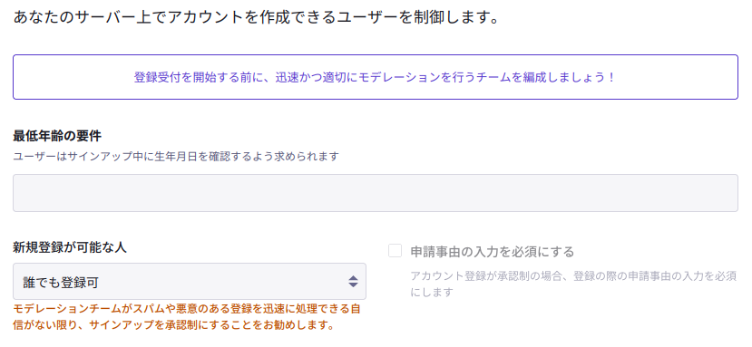
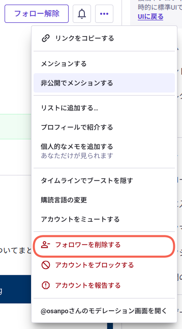
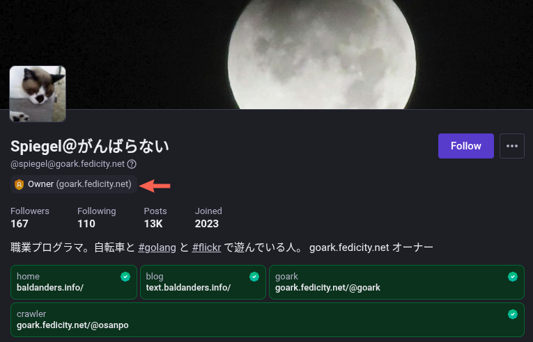

購読スパムとかフォローだけスパムとか

というわけで（どういうわけだ）今回はスパム（spam）の話。
購読スパム
まずは Mastodon Engineering からのお知らせ。
We are aware of an ongoing wave of subscription spam throughout the fediverse.
We are investigating avenues to mitigate this, but they will likely involve deep changes in the sign-up flow that may break sign-up from existing applications.
In the meantime, you can find helpful resources at https://about.iftas.org/2026/09/11/boom-protocol-spam/
「購読スパム（subscription spam）」とは，主に自動化されたボットによる大量のユーザー登録申請のことを指す。
Mastodon では2024年頃からスパムアカウントが急増していて，その暫定対策として新規登録の際は「登録には承認が必要」とすることが推奨されている。

{kind=link}
アカウント作成より
すると今度は承認待ちのスパムアカウントが滞留して，マトモな申請が埋もれてしまう問題が発生するらしい。 サインアップに関して可用性問題が発生しているわけやね。
Mastodon 開発側もこの点は認識しているようで，最初のポストに繋がるわけだが，議論中の対策案では「既存のアプリケーションからの登録ができなくなるような登録フローの大幅な変更が必要となる可能性」があるらしい。 この辺の議論は注視しておいたほうがいいかもしれない。
ちなみに私は新規登録を許可しない設定にしている。 個人サーバだし，不特定ユーザは要らない。 不特定の新規登録を許可しない設定にして，招待によるサインアップのみ受け付けるサーバは時々見かける。 日本語圏の fedibird.com もそうかな？
フォローだけスパム
ここまではサーバ運営側の話だったけど，ここからは個々のユーザの話。
スパムっぽいアカウントがフォローだけして殆ど何もポストしてないってのがあって，「これって実害なさそうだけどブロックしたほうがいいの？」と思い Kagi Assistant に訊いてみた。
結論から言うと，無害そうに見えても放置よりはブロック／フォロワー解除しておいた方が安全です。
スパム業者は、アカウント作成後しばらくフォローを集めて「普通のユーザー」のように見せかけ、数日後に一斉にスパム投稿を始める手口を使います。この「信憑性のシミュレーション」を拒否するため、フォローを許可しないこと自体が意味を持ちます。（1）
さらに、あなたのアカウントが「鍵垢」で、かつフォローリクエストを承認している場合、フォロワー限定投稿も見られてしまいます。鍵垢でも承認前なら見られませんが、うっかり承認してしまうとフォロワー限定投稿も漏れます。（2）（3）
ん？ フォロー解除って何だ？
「フォロワー解除」機能を使う（Mastodon 4.4 以降）
ブロックほど強くなく，相手をミュートもせず，ただフォロワーから外すだけの方法です。 相手に通知は行かず，あなたの公開投稿は依然として見られますが，フォロワー限定投稿は見られなくなります。
おー。 ホンマにある。

{kind=link}
この辺の話かな？
To make it easier to see at a glance if the profile belongs to someone you might know, we’ve added a little widget showing how many of the people you follow are following that person to the top of their profile. This also shows up in the profile preview that appears when you hover over their name somewhere else. Don’t want someone to follow you anymore? You don’t have to block them, simply tap “Remove follower” in the dropdown menu on their profile.
つまりフォローしてくるユーザに対して拒絶のアクションが3種類用意されているということかな。
- ブロック: 相手を完全に拒絶し，相手からのフォローやメッセージを遮断する
- フォロワー解除: 相手を自分のフォロワーから外すだけで，相手には通知されず，公開投稿は引き続き見れる
- ミュート: 相手の投稿を自分のタイムラインに表示させないが，相手は引き続きフォロー状態のまま
これとは別に「サーバ単位でブロックする」「アカウントを報告する」機能がある。 状況に応じて使い分けたい。
Mastodon ユーザに対する詐欺の手口
ついでと言ってはナニだが Mastodon ユーザに対する詐欺の手口を Kagi Assistant にまとめてもらった。
1. 「Mastodonアカウントを確認する必要がある」という偽の通知
Mastodon.social のスタッフが公式に注意喚起している手口です。（1）（2）
- 見知らぬアカウントから DM や返信で「アカウントを確認しないと利用できなくなる」「確認期限が迫っている」などと連絡が来る
- リンクをクリックすると，Mastodon に似せた偽サイトに誘導される
- ID・パスワードを入力させ，乗っ取るか，個人情報を盗む
Mastodon には「利用継続のために身分証明を提出する」ような仕組みはありません。正規の確認は，あくまで自分のウェブサイトとプロフィールを相互リンクする rel="me" 方式だけです。（3）
2. 「人気投稿で報酬がもらえるパートナーシップ」
「あなたの投稿が人気なので報酬を払う」「特別に選ばれた」などと持ちかけ，銀行口座情報などをだまし取る詐欺です。（4）
3. 「一時的にメールアドレスを変更してほしい」
Mastodon の管理者を装い，「データベースエラーがあったので一時的に指定のメールアドレスに変更してほしい」と頼んでくる手口です。これをされると，パスワードリセットのメールが攻撃者側に届き，アカウントを奪われます。（4）
手口としては目新しいものではないが，いまだに被害に遭うユーザが多いということなのだろう。
ちなみに Mastodon サーバのスタッフはプロファイルに特殊なロールバッヂが付いている。 私のサーバの場合はこんな感じ。

{kind=link}
プロファイルより
こうした印がないのであれば詐欺を疑ったほうがいい。 印があるのに上で挙げたような詐欺行為があるのなら，相手サーバ自体がヤバいかもしれないけど（笑）
お互い気をつけませう。